Made today.
Mindful of tomorrow.
From everyday energy measures to people, materials and supply chains.
Care is woven into every stage of manufacturing.
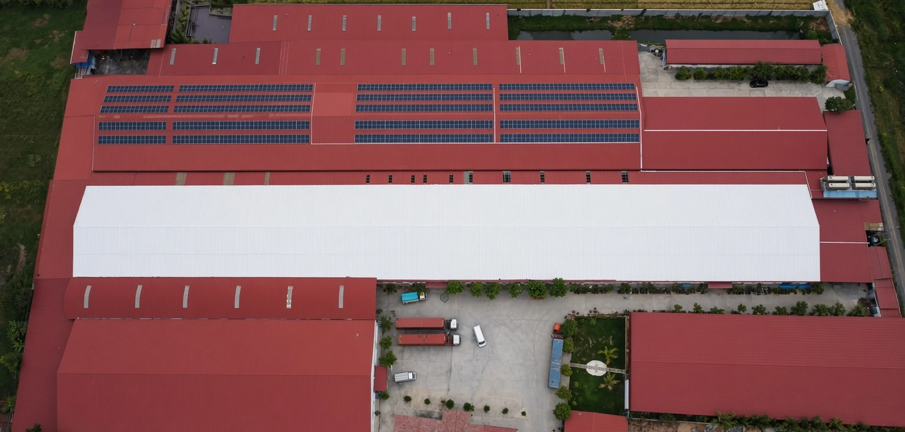
Considered resources.
Every day.
Solar power and thermal insulation bring energy-saving measures into everyday production.
About 50% of factory electricity
About 80% less heat absorption
Shared standards.Lasting trust.
From working conditions and production practices to material origins and environmental assessment.
Factory Compliance
08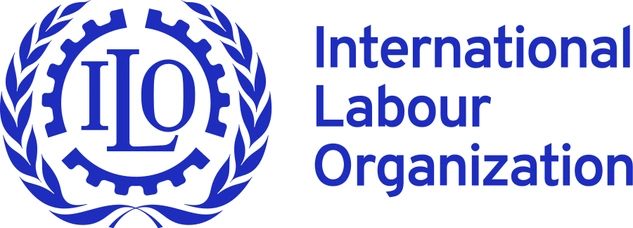
ILO · Better Work
ILO · Better Factories Cambodia
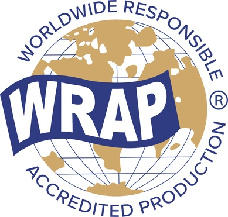
WRAP
Responsible production
amfori BSCI
Business Social Compliance Initiative
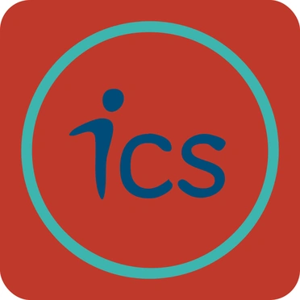
ICS
Initiative for Compliance and Sustainability
SMETA · Sedex
Sedex Members Ethical Trade Audit
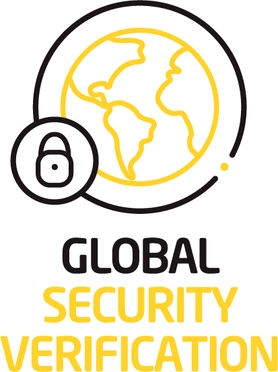
GSV
Global Security Verification
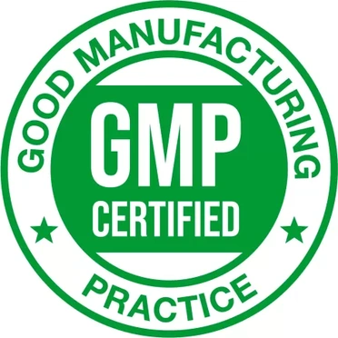
Costco GMP
Good Manufacturing Practice
TAFTAC
Cambodia textile, apparel, footwear & travel goods association
Materials & environmental standards
12Higg FEM / vFEM
Facility Environmental Module
ZDHC
Chemical management
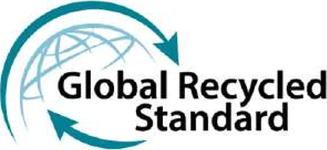
GRS
Global Recycled Standard
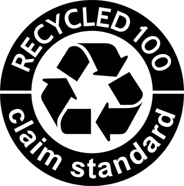
RCS
Recycled Claim Standard
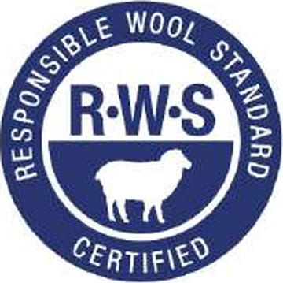
RWS
Responsible Wool Standard
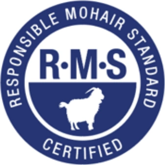
RMS
Responsible Mohair Standard
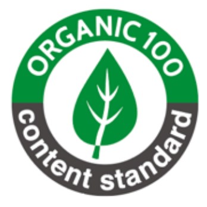
OCS
Organic Content Standard
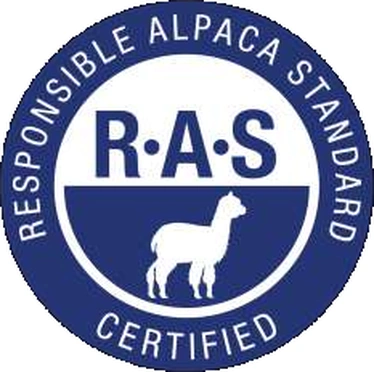
RAS
Responsible Alpaca Standard
NATIVA™
Fiber origin & traceability
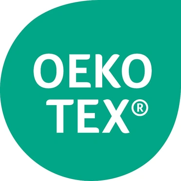
OEKO-TEX®
Textile safety standards
GTW · Green to Wear
Inditex environmental & chemical management standard
EcoVadis
Business sustainability ratings